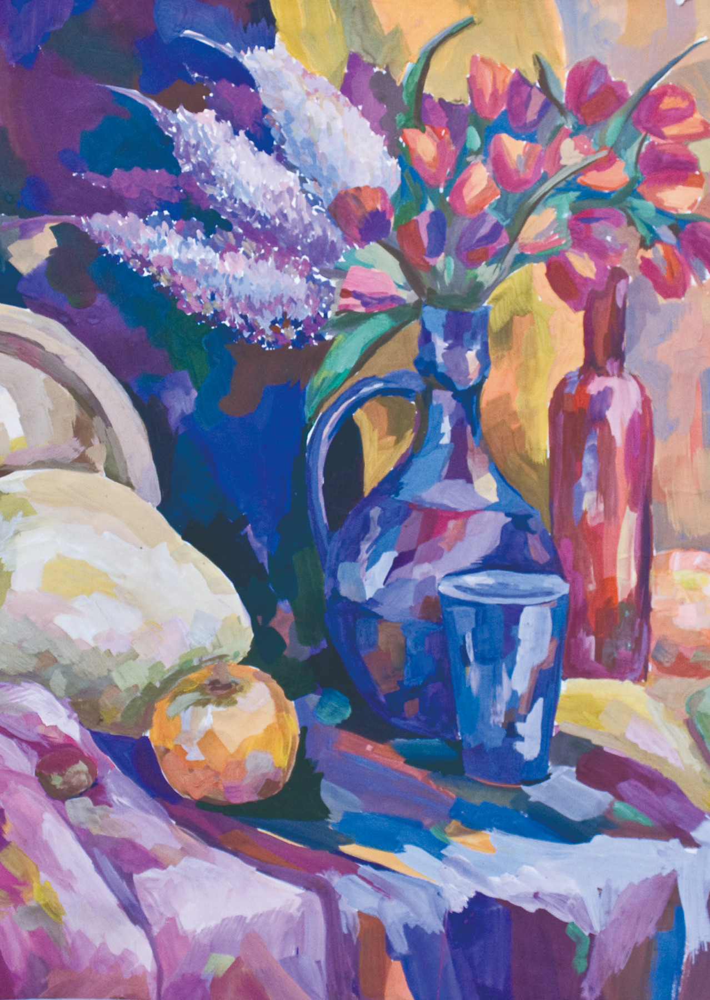
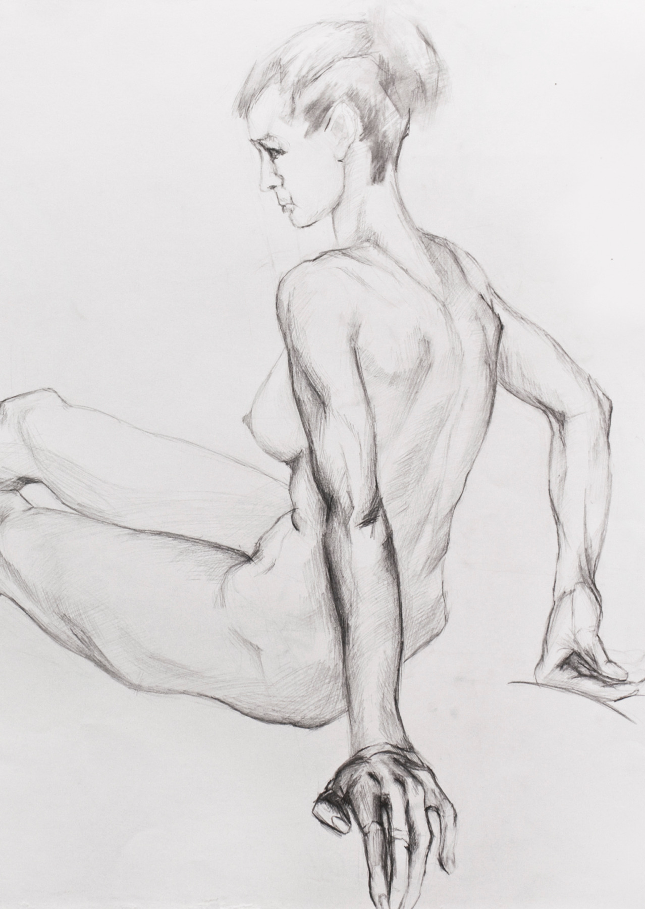
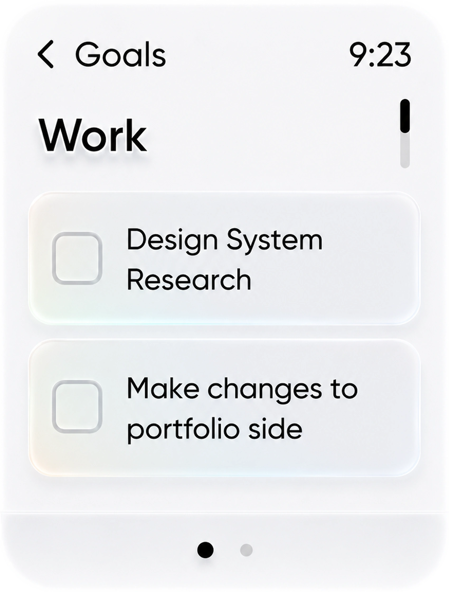

Important thing
that turn complexity
into value
AI changed the way I work as a Product Designer, and I am still rebuilding my process around it. I use AI for early UI, analytics, hypothesis testing and validation, so I can spend more time on user behaviour, business questions and making the product actually work.
I started choosing roles where I could influence the product more — not only design screens, but work with business problems, stakeholders and product metrics. I became especially strong in situations with very little context, where everything changes fast and you still need to find what is important and build a clear user journey.
I moved fully into Product Design and joined Tele2 as a Junior Designer. I grew together with the team — from 2 designers when I joined to 10 when I left — and learned how a real end-to-end product team works: developers, stakeholders, business and different parts of the product.
I saw that communication design and print were moving into digital, so I moved there too. I started working with my first digital products, landing pages and marketing communications, and was responsible not only for design, but also for shaping the vision for this part of the business.
I studied design and worked on my first small projects — competitions and one-off client work. This is where I built my visual and craft foundation.